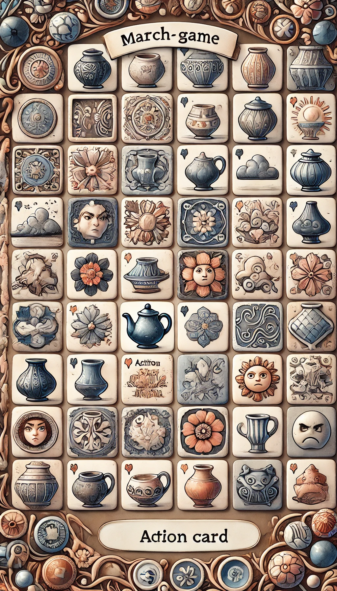

<script src="https://cdn.tailwindcss.com"></script>
<body class="bg-zinc-950"></body>

<main class="bg-zinc-800 text-zinc-400 p-8 min-h-screen">
  <h1 class="text-orange-400 text-xl">Three Match Game</h1>

  <template id="frag">
    <figure class="
      fixed top-[5rem] left-[2rem]
      w-[7rem] h-[7rem]
      bg-[url(../sprites/potter3m.png)]
      bg-[length:660%]
      --bg-[position:23.5%_26.7%]
      --bg-[position:42.5%_26.7%]
      --bg-[position:42.5%_36.4%]
      rounded-xl 
      transition-all
      duration-1000
    "></figure>
  </template>

  
</main>

<script type="module">
  import { fragment, delay } from './old-bird-soft.js';

  const rnd = range => Math.random() * range | 0;

  const spriteSheet =
    [4.5,23.5,62,81,100]
      .map((horizontal) =>
      [7,17,27,36.4,46,56,65.5,75.2,85]
        .map((vertical) => `${horizontal}% ${vertical}%`)
  ).flat();

  const fragFactory = (id, spriteIndex , x = 0, y = 0) => {
    const actor = fragment('#frag', 'body', id, 'figure');
    actor.style.backgroundPosition = spriteSheet[spriteIndex];
    actor.style.top = `${y}rem`;
    actor.style.left = `${x}rem`;
    return actor;
  }

  spriteSheet.map(
    (sprite, index) => {
      /** @type {HTMLElement} */
      const frg = fragFactory(
        sprite,
        index,
        index % 6 * 7.4 + 2,
        (index / 6 | 0 ) * 7.4 + 5
      );
      frg.onclick = async e => {
        frg.style.zIndex = 100;
        delay(10);
        e.target.style.top = '100vh';
      }
    }
  );
</script>